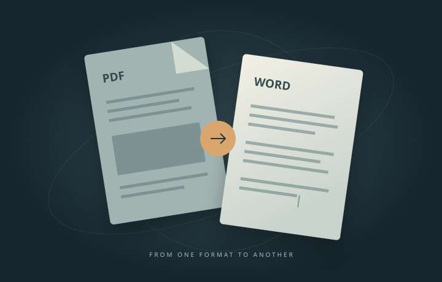
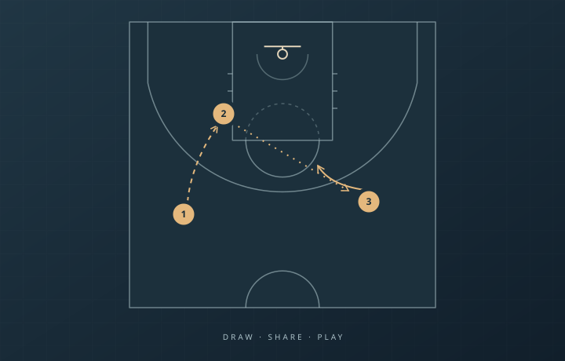

Calque
StatusIn development
Turn PDFs and scans into Word documents, simply and privately. Get editable text and review the result page by page.
A PERSONAL WORLD
I build tools and experiences around the things that draw me in. Here are my projects, as they stand today.
Explore the projects
Turn PDFs and scans into Word documents, simply and privately. Get editable text and review the result page by page.

Help design and communicate basketball plays: draw movements, organise a playbook, and present the game through animation. A personal tool for preparing sessions and sharing intentions with the team.
A 3D fantasy action adventure to explore in your browser on desktop and mobile. Discover three chapters of combat and puzzles, with multiple heroes and choices along the way. The release candidate is still being validated.

A small animated world for understanding AI workflows: roles, handoffs, parallel tasks, and human review. Explore step-by-step scenarios to see how these elements fit together in a project.
BEYOND THE PROJECTS
Basketball, F1, music, and science-fiction worlds are among my interests. Things to listen to, follow, and explore — and a constant source of curiosity.
And a thought I keep coming back to: stay curious and get a little better, one small step at a time.
Find my projects on GitHub